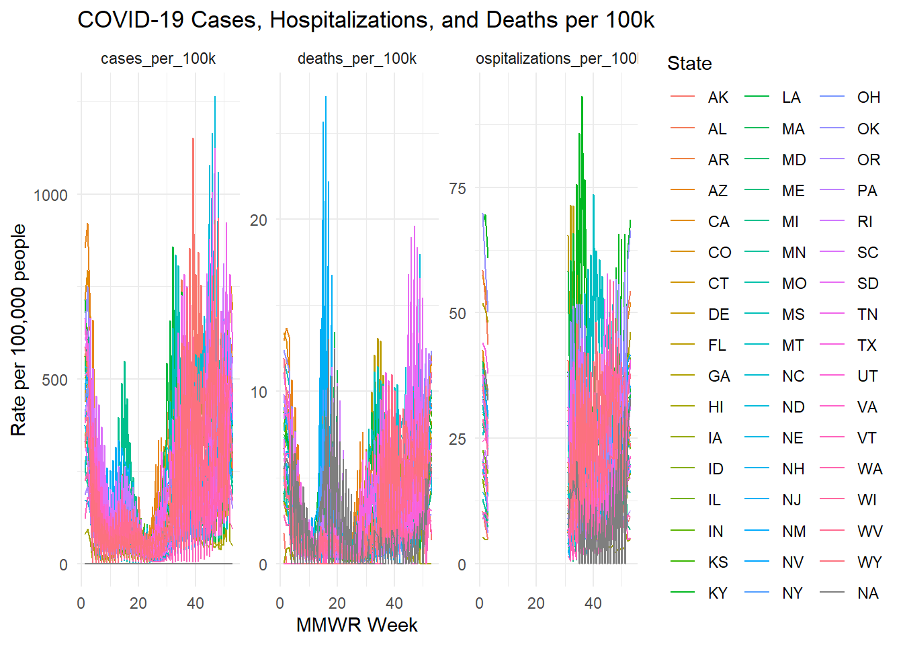
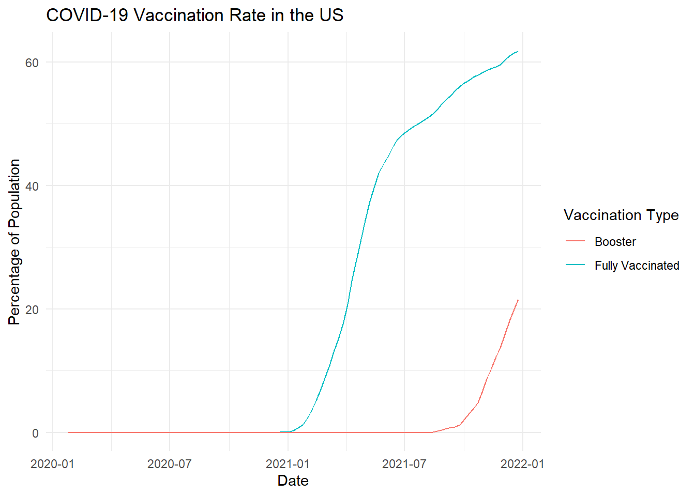
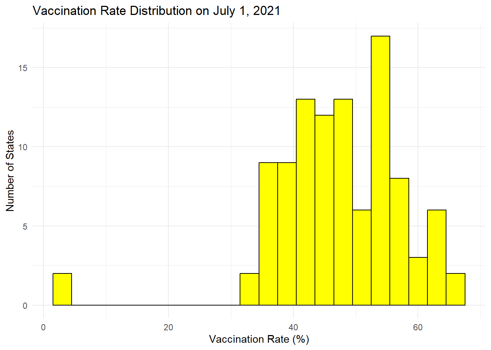
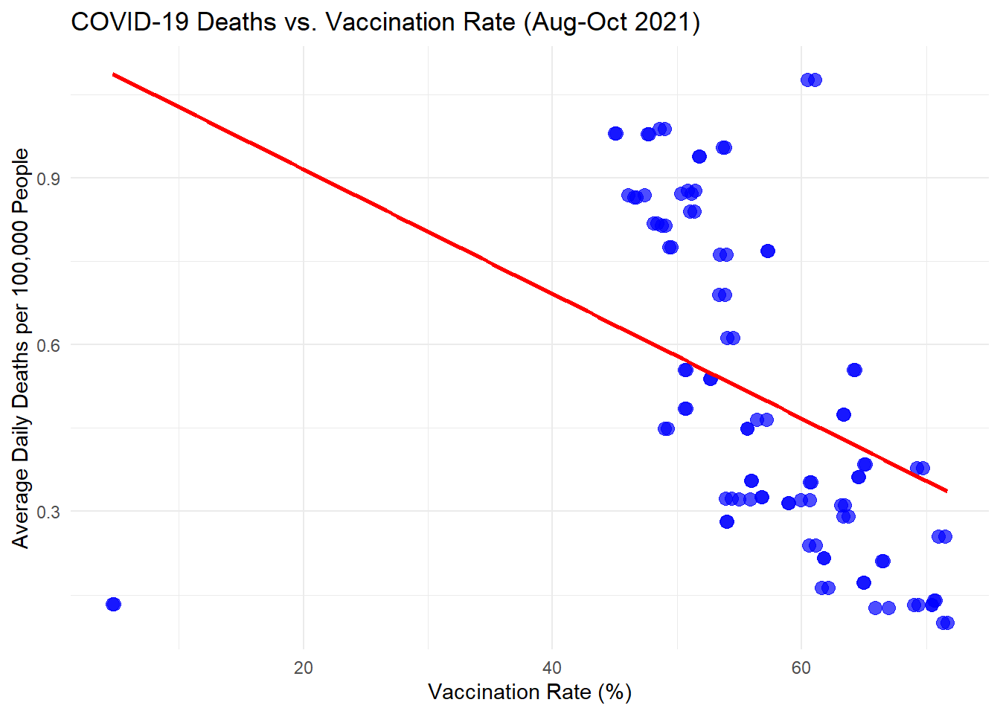

In this problem set, we aim to use data visualization to explore the following questions:
Based on SARS-Cov-2 cases, COVID-19 deaths and hospitalizations what periods defined the worst two waves of 2020-2021?
Did states with higher vaccination rates experience lower COVID-19 death rates?
Were there regional differences in vaccination rates?
We are not providing definitive answers to these questions but rather generating visualizations that may offer insights.
Objective
We will create a single data frame that contains relevant observations for each jurisdiction, for each Morbidity and Mortality Weekly Report (MMWR) period in 2020 and 2021. The key outcomes of interest are:
SARS-CoV-2 cases
COVID-19 hospitalizations
COVID-19 deaths
Individuals receiving their first COVID-19 vaccine dose
Individuals receiving a booster dose
Task Breakdown
Your task is divided into three parts:
Download the data: Retrieve population data from the US Census API and COVID-19 statistics from the CDC API.
Wrangle the data: Clean and join the datasets to create a final table containing all the necessary information.
Create visualizations: Generate graphs to explore potential insights into the questions posed above.
Instructions
As usual, copy and place the pset-04-dataviz.qmd file in a new directory called p4.
Within your p4 directory, create the following directory:
code
Inside the code directory, include the following files:
funcs.R
wrangle.R
Detailed instructions follow for each of the tasks.
Download data
For this part we want the following:
Save all your code in a file called wrangle.R that produces the final data frame.
When executed, this code should save the final data frame in an RDA file in the data directory.
(1 point) Copy the relevant code from the previous homework to create the population data frame. Put this code in the the wrangle.R file in the code directory. Comment the code so we know where the population is created, where the regions are read in, and where we combine these.
Test that your wrangling code works. Comment the following code out:
# comment this out to runsource("./code/wrangle.R")
<httr2_response>
GET
https://api.census.gov/data/2021/pep/population?get=POP_2020%2CPOP_2021%2CNAME&for=state%3A%2A&key=1ae9bf658ee82e985ea5157846cb8c459ca78532
Status: 200 OK
Content-Type: application/json
Body: In memory (2112 bytes)
── Attaching core tidyverse packages ──────────────────────── tidyverse 2.0.0 ──
✔ dplyr 1.1.4 ✔ readr 2.1.5
✔ forcats 1.0.0 ✔ stringr 1.5.1
✔ ggplot2 3.5.1 ✔ tibble 3.2.1
✔ lubridate 1.9.3 ✔ tidyr 1.3.1
✔ purrr 1.0.2
── Conflicts ────────────────────────────────────────── tidyverse_conflicts() ──
✖ dplyr::filter() masks stats::filter()
✖ dplyr::lag() masks stats::lag()
ℹ Use the conflicted package (<http://conflicted.r-lib.org/>) to force all conflicts to become errors
Attaching package: 'janitor'
The following objects are masked from 'package:stats':
chisq.test, fisher.test
Warning: The `x` argument of `as_tibble.matrix()` must have unique column names if
`.name_repair` is omitted as of tibble 2.0.0.
ℹ Using compatibility `.name_repair`.
# A tibble: 6 × 4
state_name year population state
<chr> <chr> <dbl> <chr>
1 Oklahoma 2020 3962031 OK
2 Oklahoma 2021 3986639 OK
3 Nebraska 2020 1961455 NE
4 Nebraska 2021 1963692 NE
5 Hawaii 2020 1451911 HI
6 Hawaii 2021 1441553 HI
head(population)
# A tibble: 6 × 4
state_name year population state
<chr> <chr> <dbl> <chr>
1 Oklahoma 2020 3962031 OK
2 Oklahoma 2021 3986639 OK
3 Nebraska 2020 1961455 NE
4 Nebraska 2021 1963692 NE
5 Hawaii 2020 1451911 HI
6 Hawaii 2021 1441553 HI
(1 point) In the previous problem set we wrote the following script to download cases data:
api <-"https://data.cdc.gov/resource/pwn4-m3yp.json"cases_raw <-request(api) |>req_url_query("$limit"=10000000) |>req_perform() |>resp_body_json(simplifyVector =TRUE)
We are now going to download three other datasets from CDC that provide hospitalization, provisional COVID deaths, and vaccine data. A different endpoint is provided for each one, but the requests are the same otherwise. To avoid rewriting the same code more than once, write a function called get_cdc_data that receives and endpoint and returns a data frame. Save this code in a file called funcs.R.
(1 point) Use the function get_cdc_data to download the cases, hospitalization, deaths, and vaccination data and save the data frames. We recommend saving them into objects called: cases_raw, hosp_raw, deaths_raw, and vax_raw.
In this section, you will wrangle the files downloaded in the previous step into a single data frame containing all the necessary information. We recommend using the following column names: date, state, cases, hosp, deaths, vax, booster, and population.
Key Considerations
Align reporting periods: Ensure that the time periods for which each outcome is reported are consistent. Specifically, calculate the totals for each Morbidity and Mortality Weekly Report (MMWR) period.
Harmonize variable names: To facilitate the joining of datasets, rename variables so that they match across all datasets.
(1 point) One challenge is data frames use different column names to represent the same variable. Examine each data frame and report back 1) the name of the column with state abbreviations, 2) if the rate is yearly, monthly, or weekly, daily data, 3) all the column names that provide date information.
(1 point) Wrangle the cases data frame to keep state, MMWR year, MMWR week, and the total number of cases for that week in that state. Hint: Use as_date, ymd_hms, epiweek and epiyear functions in the lubridate package. Comment appropriately. Display the result.
# Load required packagelibrary(dplyr)library(httr2)library(jsonlite)# Define function to fetch data from CDC APIget_cdc_data <-function(endpoint) { api_url <-paste0("https://data.cdc.gov/resource/", endpoint, ".json?$limit=100000") response <-request(api_url) %>%req_perform() %>%resp_body_json(simplifyVector =TRUE) %>%as_tibble()return(response)}# Fetch cases datacases_raw <-get_cdc_data("pwn4-m3yp")library(lubridate)library(stringr) cases_raw <- cases_raw %>%mutate(date_updated =as_date(str_sub(date_updated, 1, 10)), new_cases =as.numeric(new_cases) )summary(cases_raw$new_cases)
Min. 1st Qu. Median Mean 3rd Qu. Max.
0.0 665.8 3102.0 10082.6 9935.0 790954.0
summary(cases_raw$date_updated)
Min. 1st Qu. Median Mean 3rd Qu. Max.
"2020-01-23" "2020-11-19" "2021-09-16" "2021-09-16" "2022-07-14" "2023-05-11"
# A tibble: 20 × 3
state date_updated new_cases
<chr> <date> <dbl>
1 AK 2020-01-23 0
2 AK 2020-01-30 0
3 AK 2020-02-06 0
4 AK 2020-02-13 0
5 AK 2020-02-20 0
6 AK 2020-02-27 0
7 AK 2020-03-05 0
8 AK 2020-03-12 0
9 AK 2020-03-19 11
10 AK 2020-03-26 52
11 AK 2020-04-02 86
12 AK 2020-04-09 86
13 AK 2020-04-16 65
14 AK 2020-04-23 37
15 AK 2020-04-30 18
16 AK 2020-05-07 19
17 AK 2020-05-14 15
18 AK 2020-05-21 15
19 AK 2020-05-28 23
20 AK 2020-06-04 91
(1 point) Now repeat the same exercise for hospitalizations. Note that you will have to collapse the data into weekly data and keep the same columns as in the cases dataset, except keep total weekly hospitalizations instead of cases. Remove weeks with less than 7 days reporting. Display your result and comment appropriately.
library(dplyr)library(lubridate)hosp_raw <-get_cdc_data("39z2-9zu6")# Process hospitalization data similar to cases datahosp_weekly <- hosp_raw %>%mutate(# Convert collection_date to Date formatdate =as_date(collection_date),# Extract MMWR year and MMWR weekmmwr_year =epiyear(date),mmwr_week =epiweek(date) ) %>%# Group by state, MMWR year, and MMWR weekgroup_by(jurisdiction, mmwr_year, mmwr_week) %>%# Summarize total hospitalizations per week per statesummarise(total_hospitalizations =sum(as.numeric(new_covid_19_hospital), na.rm =TRUE),num_days =n(), # Count number of records in the week.groups ="drop"# Ensure grouping is removed for further processing ) %>%# Keep only weeks with full 7-day reportingfilter(num_days ==7) %>%# Remove the auxiliary columnselect(-num_days) # Check againsummary(hosp_weekly$total_hospitalizations)
Min. 1st Qu. Median Mean 3rd Qu. Max.
0 111 370 1612 1107 150650
head(hosp_weekly)
# A tibble: 6 × 4
jurisdiction mmwr_year mmwr_week total_hospitalizations
<chr> <dbl> <dbl> <dbl>
1 AK 2020 32 28
2 AK 2020 33 22
3 AK 2020 34 31
4 AK 2020 35 31
5 AK 2020 36 35
6 AK 2020 37 30
save(hosp_weekly, file ="./code/hosp_weekly.rda")
(1 point) Repeat what you did in the previous two exercises for provisional COVID-19 deaths. Display the result and comment appropriately.
deaths_raw <-get_cdc_data("r8kw-7aab")deaths <- deaths_raw |># Select required columnsselect( state, deaths = covid_19_deaths, date = week_ending_date ) |>mutate(date =as_date(ymd_hms(date)), mmwr_year =epiyear(date), mmwr_week =epiweek(date) ) |># Group by state and MMWR periods and calculate weekly totalsgroup_by(state, mmwr_year, mmwr_week) |>summarise(deaths =sum(as.numeric(deaths), na.rm =TRUE), # sum weekly deaths.groups ="drop" )deaths <- deaths |>mutate(state = state.abb[match(state, state.name)]) |>mutate(state =case_when( state =="District of Columbia"~"DC", state =="Puerto Rico"~"PC",TRUE~ state ))# Display resultprint(head(deaths))
# A tibble: 6 × 4
state mmwr_year mmwr_week deaths
<chr> <dbl> <dbl> <dbl>
1 AL 2020 1 0
2 AL 2020 2 0
3 AL 2020 3 0
4 AL 2020 4 0
5 AL 2020 5 0
6 AL 2020 6 0
save(deaths, file ="./code/deaths.rda")
(1 point) Repeat this now for vaccination data. Keep the variables series_complete and booster along with state and date. Display the result and comment appropriately. Hint: only use the rows with date_type == 'Admin' to only include vaccine data based on the day it was administered, rather than reported.
library(dplyr)library(lubridate)vax_clean <- vax_raw %>%filter(date_type =="Admin") %>%# Keep only rows where vaccine data is based on administration daterename(state = location, series_complete = series_complete_cumulative, booster = booster_cumulative) %>%mutate(date =as_date(date),series_complete =as.numeric(series_complete),booster =as.numeric(booster) ) %>%select(state, date, series_complete, booster) %>%arrange(state, date)print(head(vax_clean))
state date series_complete booster
1 AK 2020-12-13 30 0
2 AK 2020-12-14 30 0
3 AK 2020-12-15 31 0
4 AK 2020-12-16 34 0
5 AK 2020-12-17 41 0
6 AK 2020-12-18 45 0
(1 point) Now we are ready to join the tables. We will only consider 2020 and 2021 as we don’t have population sizes for 2022. However, because we want to guarantee that all dates are included we will create a data frame with all possible weeks. We can use this:
# Load necessary librarieslibrary(dplyr)library(lubridate)library(tidyr)# Ensure all states use two-letter abbreviationsstate_lookup <-data.frame(state_full = state.name,state_abbr = state.abb) %>%bind_rows(data.frame(state_full ="District of Columbia", state_abbr ="DC"))convert_state <-function(state_col) {ifelse(state_col %in% state.abb, state_col, state_lookup$state_abbr[match(state_col, state_lookup$state_full)])}# Convert all datasets to use state abbreviations and ensure year/week are numericpopulation <- population %>%mutate(state =convert_state(state),year =as.numeric(year)) %>%distinct(state, year, .keep_all =TRUE)cases_weekly <- cases_weekly %>%mutate(state =convert_state(state),mmwr_year =as.numeric(mmwr_year),mmwr_week =as.numeric(mmwr_week)) %>%distinct(state, mmwr_year, mmwr_week, .keep_all =TRUE)hosp_weekly <-rename(hosp_weekly, state = jurisdiction) %>%mutate(state =convert_state(state),mmwr_year =as.numeric(mmwr_year),mmwr_week =as.numeric(mmwr_week)) %>%distinct(state, mmwr_year, mmwr_week, .keep_all =TRUE)deaths <- deaths %>%mutate(state =convert_state(state),mmwr_year =as.numeric(mmwr_year),mmwr_week =as.numeric(mmwr_week)) %>%distinct(state, mmwr_year, mmwr_week, .keep_all =TRUE)vax_clean <- vax_clean %>%mutate(state =convert_state(state), date =as_date(date)) %>%distinct(state, date, .keep_all =TRUE)# Create a data frame with all possible weeks in 2020 and 2021all_dates <-data.frame(date =seq(make_date(2020, 1, 25), make_date(2021, 12, 31), by ="week")) %>%mutate(date =ceiling_date(date, unit ="week", week_start =7) -days(1)) %>%mutate(mmwr_year =epiyear(date), mmwr_week =epiweek(date))# Ensure all states are represented for each week in 2020 and 2021dates_and_pop <-crossing(all_dates, data.frame(state =unique(population$state))) %>%left_join(population, by =c("state", "mmwr_year"="year")) %>%distinct(state, mmwr_year, mmwr_week, .keep_all =TRUE) # Remove duplicates# Merge all datasets while ensuring correct state and date mappingsdat <- dates_and_pop %>%left_join(cases_weekly, by =c("state", "mmwr_year", "mmwr_week")) %>%left_join(hosp_weekly, by =c("state", "mmwr_year", "mmwr_week")) %>%left_join(deaths, by =c("state", "mmwr_year", "mmwr_week")) %>%left_join(vax_clean, by =c("state", "date")) %>%arrange(state, date)# Display first few rows of the final datasetprint(head(dat))
# A tibble: 6 × 11
date mmwr_year mmwr_week state state_name population total_cases
<date> <dbl> <dbl> <chr> <chr> <dbl> <dbl>
1 2020-01-25 2020 4 AK Alaska 732441 0
2 2020-02-01 2020 5 AK Alaska 732441 0
3 2020-02-08 2020 6 AK Alaska 732441 0
4 2020-02-15 2020 7 AK Alaska 732441 0
5 2020-02-22 2020 8 AK Alaska 732441 0
6 2020-02-29 2020 9 AK Alaska 732441 0
# ℹ 4 more variables: total_hospitalizations <dbl>, deaths <dbl>,
# series_complete <dbl>, booster <dbl>
Now join all the tables to create your final table. Make sure it is ordered by date within each state. Call it dat. Show a few rows here.
Data visualization: generate some plots
We are now ready to create some figures. For each question below, write code that generates a plot that addresses the question.
(1 point) Plot a trend plot for cases, hospitalizations and deaths for each state. Color by region. Plot rates per \(100,000\) people. Place the plots on top of each other. Hint: Use pivot_longer and facet_wrap.
# A tibble: 6 × 11
date mmwr_year mmwr_week state state_name population total_cases
<date> <dbl> <dbl> <chr> <chr> <dbl> <dbl>
1 2020-01-25 2020 4 AK Alaska 732441 0
2 2020-02-01 2020 5 AK Alaska 732441 0
3 2020-02-08 2020 6 AK Alaska 732441 0
4 2020-02-15 2020 7 AK Alaska 732441 0
5 2020-02-22 2020 8 AK Alaska 732441 0
6 2020-02-29 2020 9 AK Alaska 732441 0
# ℹ 4 more variables: total_hospitalizations <dbl>, deaths <dbl>,
# series_complete <dbl>, booster <dbl>
dat <- dat %>%mutate(cases_per_100k = (total_cases / population) *100000,hospitalizations_per_100k = (total_hospitalizations / population) *100000,deaths_per_100k = (deaths / population) *100000 )dat_long <- dat %>%select(state, mmwr_year, mmwr_week, cases_per_100k, hospitalizations_per_100k, deaths_per_100k) %>%pivot_longer(cols =c(cases_per_100k, hospitalizations_per_100k, deaths_per_100k),names_to ="metric", values_to ="rate")ggplot(dat_long, aes(x = mmwr_week, y = rate, color = state)) +geom_line() +facet_wrap(~metric, scales ="free_y") +labs(title ="COVID-19 Cases, Hospitalizations, and Deaths per 100k",x ="MMWR Week",y ="Rate per 100,000 people",color ="State") +theme_minimal()

(1 point) To determine when vaccination started and when most of the population was vaccinated, compute the percent of the US population (including DC and Puerto Rico) vaccinated by date. Do the same for the booster. Then plot both percentages.
vaccination_summary <- dat %>%group_by(date) %>%summarise(total_vaccinated =sum(series_complete, na.rm =TRUE),total_boosted =sum(booster, na.rm =TRUE),total_population =sum(population, na.rm =TRUE) ) %>%mutate(percent_vaccinated = (total_vaccinated / total_population) *100,percent_boosted = (total_boosted / total_population) *100 )library(ggplot2)ggplot(vaccination_summary, aes(x = date)) +geom_line(aes(y = percent_vaccinated, color ="Fully Vaccinated")) +geom_line(aes(y = percent_boosted, color ="Booster")) +labs(title ="COVID-19 Vaccination Rate in the US",x ="Date",y ="Percentage of Population",color ="Vaccination Type" ) +theme_minimal()

(1 point) Plot the distribution of vaccination rates across states on July 1, 2021.
library(ggplot2)library(dplyr)vax_clean <- vax_clean %>%mutate(series_complete =as.numeric(series_complete))population <- population %>%mutate(population =as.numeric(population))vax_july1 <- vax_clean %>%filter(date ==as.Date("2021-07-01")) %>%left_join(population, by ="state") %>%mutate(vax_rate = (series_complete / population) *100) ggplot(data = vax_july1, mapping =aes(x = vax_rate)) +geom_histogram(binwidth =3, color ="black", fill ="yellow", alpha =1.0) +labs(title ="Vaccination Rate Distribution on July 1, 2021",x ="Vaccination Rate (%)",y ="Number of States") +theme_minimal()

(1 point) Is there a difference across region? Generate a plot of your choice.
The map shows strong geographical variations in immunization rates, with the Northeast and West leading in vaccine uptake, while the South lags behind.The presence of the NA category suggests some missing or unclassified data that should be investigated further.
(1 point) Using the previous figures, identify a time period that meets the following criteria:
A significant COVID-19 wave occurred across the United States.
A sufficient number of people had been vaccinated.
Next, follow these steps:
For each state, calculate the COVID-19 deaths per day per 100,000 people during the selected time period.
Determine the vaccination rate (primary series) in each state as of the last day of the period.
Create a scatter plot to visualize the relationship between these two variables:
The x-axis should represent the vaccination rate.
The y-axis should represent the deaths per day per 100,000 people.
library(ggplot2)library(dplyr)# Define the analysis period (Delta wave: August 1 - October 31, 2021)analysis_period <- dat %>%filter(date >=as.Date("2021-08-01") & date <=as.Date("2021-10-31"))# Calculate average daily deaths per 100,000 peopledeath_stats <- analysis_period %>%group_by(state) %>%summarise(daily_deaths_per_100k =mean(deaths / population *100000/7, na.rm =TRUE) # Convert weekly deaths to daily rate )# Extract the vaccination rate on the last day of the period (October 31, 2021)vaccination_summary <- vax_clean %>%filter(date ==as.Date("2021-10-31")) %>%select(state, series_complete) %>%left_join(population, by ="state") %>%mutate(vaccination_rate = (series_complete / population) *100) %>%select(state, vaccination_rate)# Merge datasets: deaths and vaccination ratesmerged_data <- death_stats %>%left_join(vaccination_summary, by ="state")# Scatter plot: Vaccination Rate vs. Daily Deaths per 100,000ggplot(merged_data, aes(x = vaccination_rate, y = daily_deaths_per_100k)) +geom_point(size =3, color ="blue", alpha =0.7) +geom_smooth(method ="lm", se =FALSE, color ="red") +# Add linear regression trend linelabs(title ="COVID-19 Deaths vs. Vaccination Rate (Aug-Oct 2021)",x ="Vaccination Rate (%)",y ="Average Daily Deaths per 100,000 People" ) +theme_minimal()
`geom_smooth()` using formula = 'y ~ x'

(1 point) Repeat the exercise for the booster.
library(ggplot2)library(dplyr)# Define the analysis period (Delta wave: August 1 - October 31, 2021)analysis_period <- dat %>%filter(date >=as.Date("2021-08-01") & date <=as.Date("2021-10-31"))# Calculate average daily deaths per 100,000 peopledeath_stats <- analysis_period %>%group_by(state) %>%summarise(daily_deaths_per_100k =mean(deaths / population *100000/7, na.rm =TRUE) # Convert weekly deaths to daily rate )# Extract the booster vaccination rate on the last day of the period (October 31, 2021)booster_summary <- vax_clean %>%filter(date ==as.Date("2021-10-31")) %>%select(state, booster) %>%left_join(population, by ="state") %>%mutate(booster_rate = (booster / population) *100) %>%select(state, booster_rate)# Merge datasets: deaths and booster vaccination ratesmerged_booster_data <- death_stats %>%left_join(booster_summary, by ="state")# Scatter plot: Booster Vaccination Rate vs. Daily Deaths per 100,000ggplot(merged_booster_data, aes(x = booster_rate, y = daily_deaths_per_100k)) +geom_point(size =3, color ="purple", alpha =0.7) +geom_smooth(method ="lm", se =FALSE, color ="darkorange") +# Add linear regression trend linelabs(title ="COVID-19 Deaths vs. Booster Vaccination Rate (Aug-Oct 2021)",x ="Booster Vaccination Rate (%)",y ="Average Daily Deaths per 100,000 People" ) +theme_minimal()